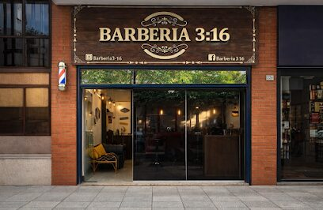
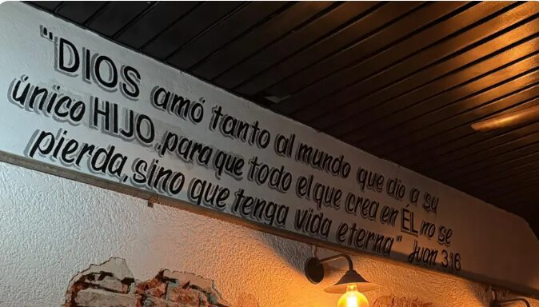
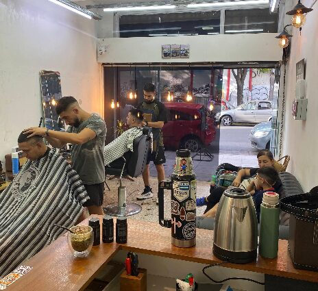
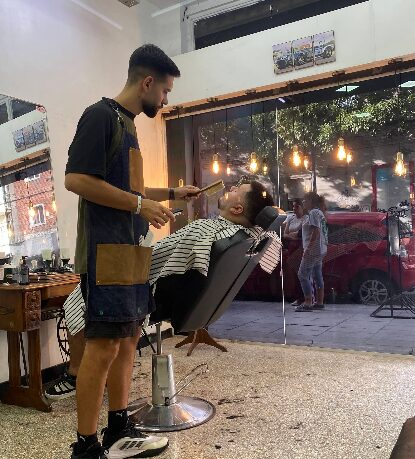

Agustín y Enzo te esperan en el centro de San Martín, a una cuadra de la plaza. Elegí servicio, barbero y horario, y listo.
★★★★★ 5,0 en Google, 148 reseñasCorte desde $18.000

Cuatro pasos y te confirmamos por WhatsApp. Solo te pedimos tu nombre y tu número.
Los mismos precios con los dos barberos. Las cejas y el diseño se suman a cualquier corte.
Dos hermanos, el mismo trato. Podés elegir con quién o tomar el primer horario libre.
“Dios amó tanto al mundo que dio a su único Hijo, para que todo el que crea en Él no se pierda, sino que tenga vida eterna.” Juan 3:16
“Dios amó tanto al mundo que dio a su único Hijo, para que todo el que crea en Él no se pierda, sino que tenga vida eterna.”



148 reseñas en Google y 47 en la agenda online, todas de 5 estrellas.
Van mis hijos y siempre excelente todo: la organización, el trato y los cortes. Virginia, corte de cabello con Agustín
Van mis hijos y siempre excelente todo: la organización, el trato y los cortes.
Excelente atención y servicio de ambos. Lucas, corte de cabello con Enzo
Excelente atención y servicio de ambos.